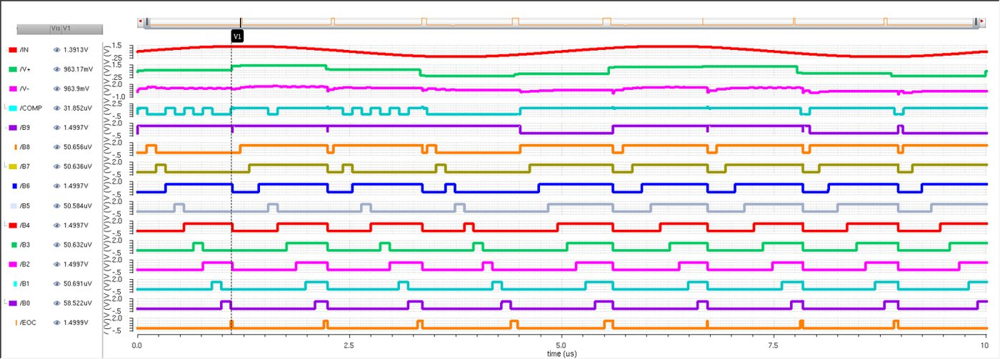

Analog & Mixed-Signal VLSI · Academic project · 2024–25
10-bit SAR ADC in 90 nm CMOS
A successive-approximation analog-to-digital converter designed transistor by transistor in Cadence Virtuoso and verified in Spectre. The goal was a balance that recent published designs didn't reach: fast enough for real-time signals, and still at microwatt power.
- Cadence Virtuoso
- Spectre
- 90 nm CMOS
- Mixed-signal
10 bitresolution
900 kS/ssampling rate
31.18 µWtotal power (simulated)
1.5 Vsingle supply

My part
- SAR control logic: the flip-flop sequence register that moves a trial bit from MSB to LSB, the code register that keeps or clears each bit based on the comparator, and End-of-Conversion. Built on a D flip-flop I designed from transistors.
- Top-level integration of all four blocks into the full converter.
- Full-ADC verification: sine-input transient simulation, plus power and delay measured in the Analog Design Environment.

Compared with published designs
| Design | Node | Rate | Power | Supply |
|---|---|---|---|---|
| Huang & Wu, 2025 | 40 nm | 500 kS/s | 0.90 µW | 0.7 V |
| Kumaradasan et al., 2024 | 180 nm | 833 kS/s | 90.11 µW | 1.6 V |
| Moghadam et al., 2024 | 65 nm | 1 kS/s | 2.08 nW | 0.2 V |
| This design | 90 nm | 900 kS/s | 31.18 µW | 1.5 V |
An honest look at the numbers. In my later review I checked the design by hand.
← All projects
- Sample-and-hold: settles about 70× faster than needed.
- Sampling noise: about 0.1 LSB.
- Energy per conversion step: about 33.8 fJ at best.
- What comes next: linearity (DNL/INL), effective bits (ENOB), Monte Carlo on the capacitor DAC, and layout, because these results are from schematic-level simulation.